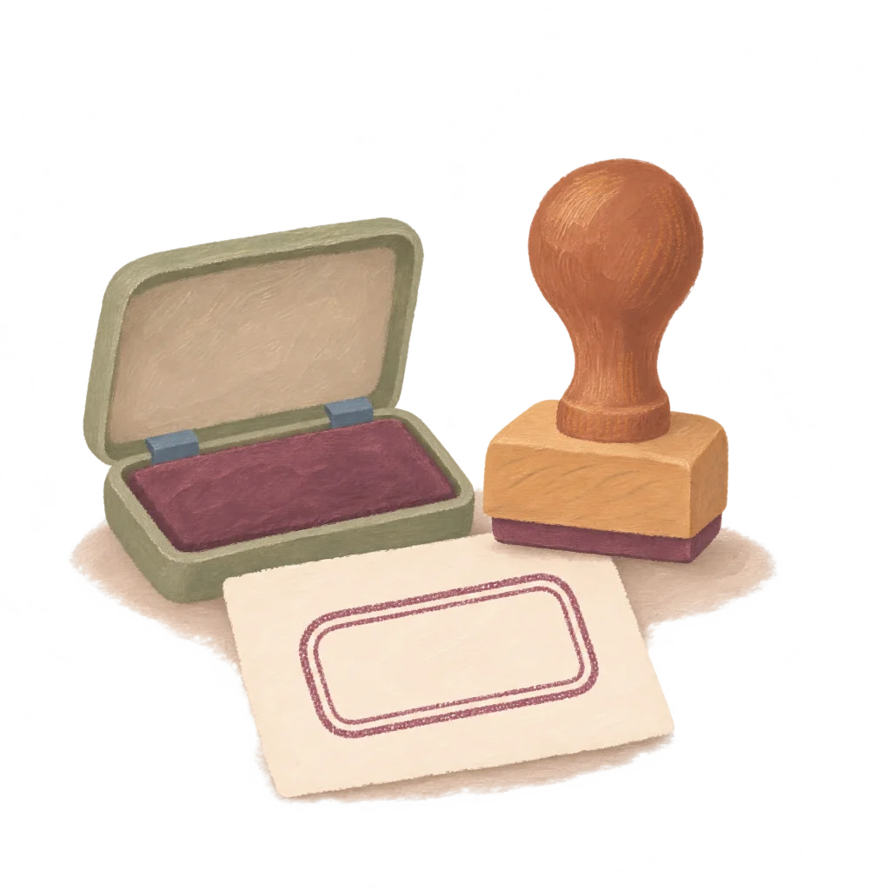

O caminho com Caio
Começa na primeira tentativa. Não tem prazo nem meta.

- Primeira tentativaQuando vocês tentarem uma ideia
- Três ideias diferentesQuando tentarem três
- Primeiro repasseQuando você preparar um texto para outro cuidador
São registros de uso. Não medem aprendizagem nem comparam crianças.